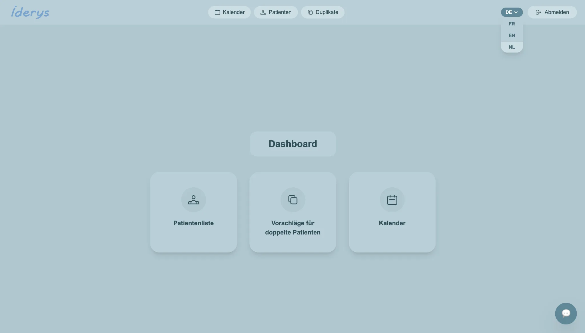
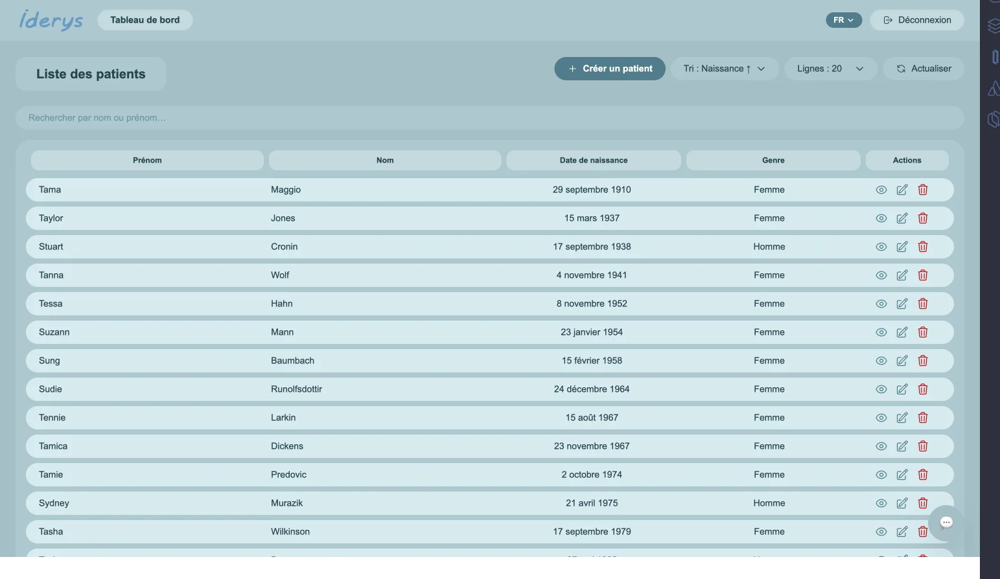
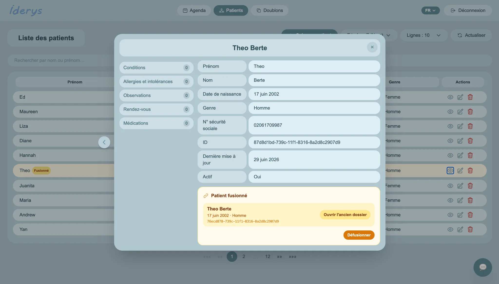
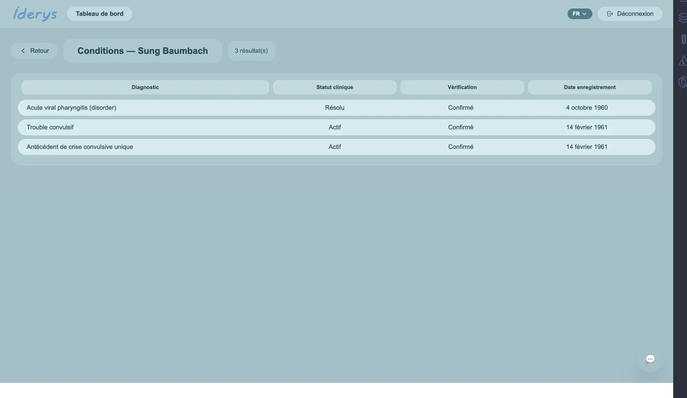
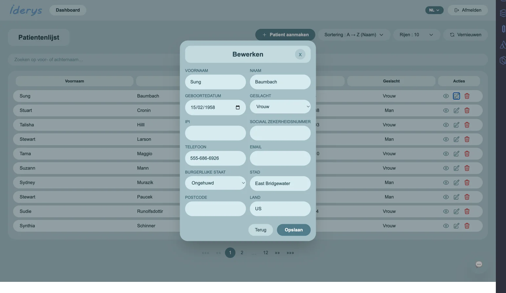
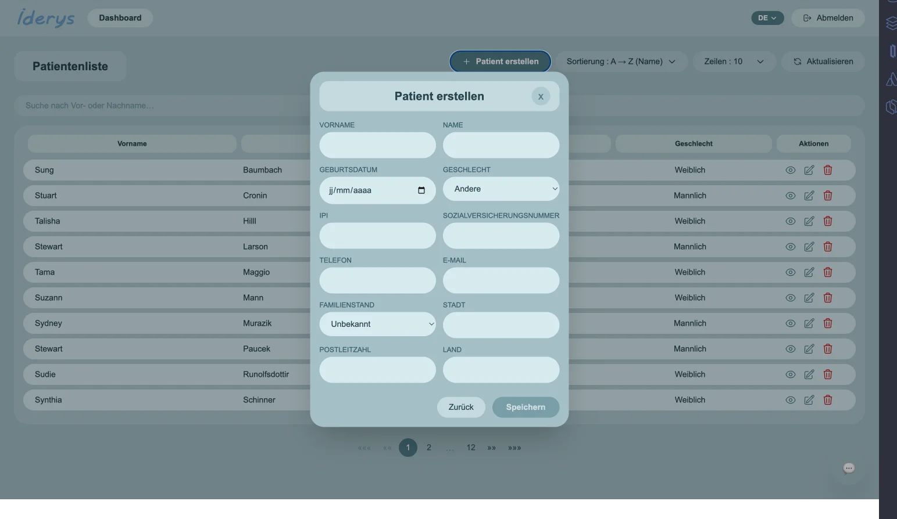
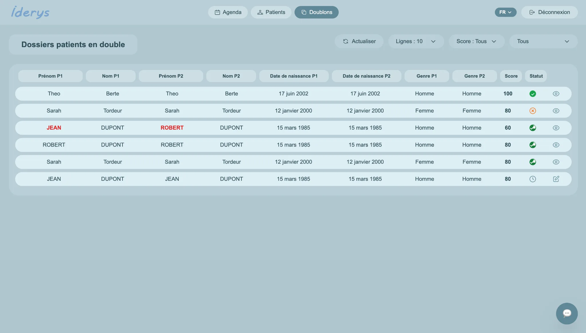
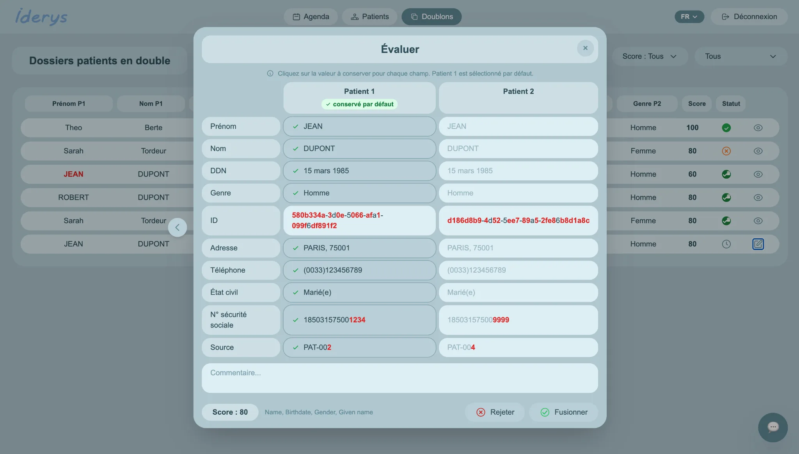
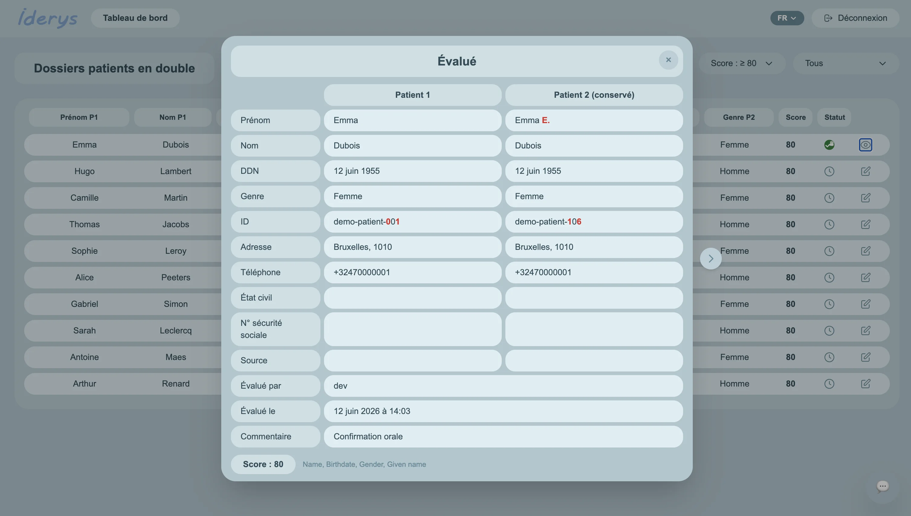
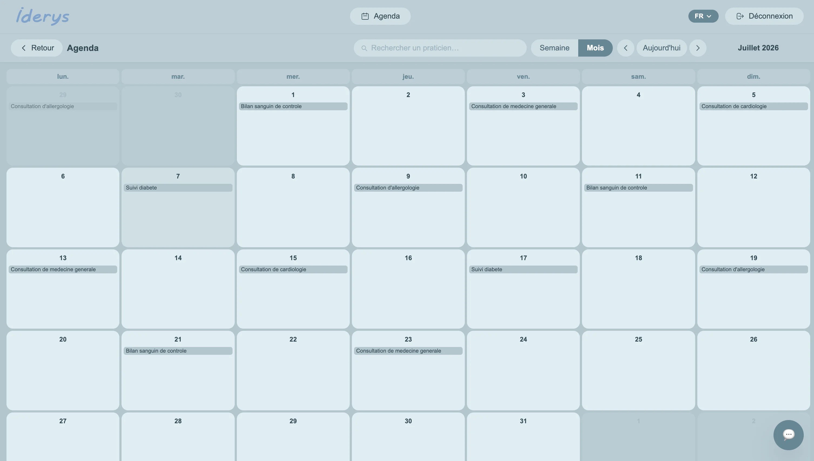

Master Patient Index - Angular, FHIR & IRIS for Health
Conception du frontend d'un Master Patient Index (MPI) pour identifier et traiter les doublons de dossiers patients. L'application Angular communique avec une API InterSystems IRIS for Health, manipule des ressources FHIR R4 typées et accompagne l'opérateur de la comparaison jusqu'à la fusion ou au rejet.
Authentification, dashboard, listes paginées, revue des doublons, agenda filtré par praticien, filtres actif/inactif et design responsive multilingue (FR/EN/NL/DE).
CRUD complet : création, édition et suppression des patients et de toutes leurs ressources cliniques : conditions ICD-10, allergies, observations, rendez-vous, médicaments SNOMED CT.
Fusion champ par champ avec historique des valeurs conservées, défusion tracée (restauration FHIR + gestion HTTP 409), AuditEvent FHIR sur chaque décision et historique consultable par proposition ou par patient.
Chatbot contextuel, recherche vectorielle IRIS, similarité sémantique, scoring des doublons et recherche floue (Fuse.js) étendue aux sources de fusion.
Architecture lazy-loaded, typage FHIR R4 strict, gestion globale des erreurs, tests automatisés Bruno (56 req. · 187 tests) et workflow GitHub Actions.
Captures réelles du projet










Captures extraites de l'analyse technique et du suivi journalier du stage, datés de mai et juin 2026.
Avancées prévues
Fusionner deux patients quelconques depuis l'interface, sans passer par une proposition automatique.
Détecter les doublons « Dupont »/« Dupond » grâce à une clé Soundex2 ou un blocking multi-axes (DDN + NISS).
Pondérer l’adresse et le numéro national dans le score de similarité, des signaux forts actuellement ignorés.
Rechercher et filtrer les conditions, allergies et observations directement depuis la fiche patient.